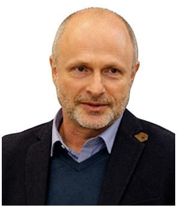

Profile
Mark Applebaum is an associate professor in the Department of Mathematics and Teaching Mathematics at Kaye Academic College of Education (Associate Professor since 2018). He received an MSc from Azerbaijan State University named after Kirov in 1981–1986 and a PhD from Azerbaijan State Pedagogical University in 1996–2001. The dissertation is Teaching Mathematics using the idea of inquiry-based problems, supervised by Peter Samovol. He was a postdoctoral fellow with Roza Leikin at the University of Haifa in 2006–2007. He heads the MEd program in integrative STEM education and the Research and Evaluation Authority at Kaye.
Work experience
Kaye Academic College of Education, Israel
2018–presentAssociate Professor
- Associate Professor
Kaye Academic College of Education
2015–2018Senior Lecturer Alef
Kaye Academic College of Education
2011–2015Senior lecturer
Kaye Academic College of Education
2007–2011Lecturer
Kaye Academic College of Education
2003–2007Senior teacher
Negev Academic College of Engineering, Israel
2001–2004Invited lecturer
Kaye Academic College of Education
2016–presentHead of the Research and Evaluation Authority
Kaye Academic College of Education
2023–presentHead of the MEd program in integrative STEM education
Kaye Academic College of Education
2002–2008Head of the Department of Mathematics and Teaching Mathematics
Education
Postdoctoral studies
2006–2007Fellow with Roza Leikin
University of Haifa, Faculty of Education, Israel
PhD
1996–2001Dissertation: Teaching Mathematics using the idea of inquiry-based problems. Supervisor: Peter Samovol
Azerbaijan State Pedagogical University, Baku, Azerbaijan
MSc
1981–1986Azerbaijan State University named after Kirov, Baku, Azerbaijan
Publications
Books and textbooks
1. Samovol, P., Applebaum, M., Shapiro E., & Shechter, M. (2000). The Methods of Solving Problems with Integer Numbers. Ben Gurion University Publ. [86 pages]. (in Hebrew).
2. Gukov, A., Samovol, P., & Applebaum, M. (2006). Elegant Mathematics in Tasks, URSS, Moskva. [205 pages]. (In Russian).
3. Gukov, A., Samovol, P., & Applebaum, M. (2008). La Matematica Elegante, URSS, Moskva. [232 pages]. (In Spanish). C. OTHER SCIENTIFIC BOOKS
4. Applebaum, M., & Samovol, P. (2004). Tests in Algebra for7-th Grade. Yesod, Tel-Aviv. [101 pages]. (in Hebrew). November, 2024
5. Applebaum, M., & Samovol, P. (2004). Mathematics From School to University. Part 1: Induction. Sefer Lakol, Tel-Aviv. [100 pages]. (in Hebrew).
6. Applebaum, M., & Samovol, P. (2005). Mathematics From School to University. Part 2: Introduction to Number’s Theory. Sefer Lakol, Tel-Aviv. [173 pages]. (in Hebrew).
7. Applebaum, M., & Samovol, P. (2005). 120 tasks for Children Mathematical Thinking Development (the 7th Grade). Yesod, Tel-Aviv. [54 pages]. (in Hebrew).
8. Applebaum, M., Aburis, Y., & Samovol, P. (2007). 100 problems and one problem for Mathematical Thinking Development (the 7th Grade). MOFET Association, Tel-Aviv. [48 pages]. (In Arabic).
9. Applebaum, M., & Samovol, P. (2006). Multiplication Impossible, 250 tasks for Children Mathematical Thinking’ Development (the 8th Grade). Meirav, Tel-Aviv. [85 pages]. (in Hebrew).
10. Samovol, P., & Applebaum, M. (2012). Through the challenge. Shoresh, Tel-Aviv. [185 pages]. (In Hebrew).
11. Applebaum, M. (2017). Kangaroo Contest for 2-d grade students. Yesod, Tel-Aviv. [104 pages]. (In Hebrew).
12. *Applebaum, M. (2019). Kangaroo Contest for 1st-grade students. Yesod, Tel-Aviv. [56 pages]. (In Hebrew).
13. *Applebaum, M. (2019). Kangaroo Contest for 3rd-grade students. Yesod, Tel-Aviv. [56 pages]. (In Hebrew).
14. *Applebaum, M. (2021). Kangaroo Contest for 3rd-grade students. Yesod, Tel-Aviv. [56 pages]. (In Arabic).
15. *Applebaum, M. (2019). Kangaroo Contest for 4th-grade students. Yesod, Tel-Aviv. [56 pages]. (In Hebrew).
16. *Applebaum, M. (2020). Kangaroo Contest for 4th-grade students. Yesod, Tel-Aviv. [56 pages]. (In Arabic).
17. *Applebaum, M. (2019). Kangaroo Contest for 5th-grade students. Yesod, Tel-Aviv. [56 pages]. (In Hebrew).
18. *Applebaum, M. (2022). Kangaroo Contest for 5th-grade students. Yesod, Tel-Aviv. [56 pages]. (In Arabic).
19. *Applebaum, M. (2019). Kangaroo Contest for 6th-grade students. Yesod, Tel-Aviv. [56 pages]. (In Hebrew).
20. *Applebaum, M. (2023). Kangaroo Contest for 6th-grade students. Yesod, Tel-Aviv. [56 pages]. (In Arabic).
21. *Applebaum, M. (2021). Development of spatial abilities from childhood. Municipality of Jerusalem. [20 pages]. (In Hebrew).
22. *Applebaum, M. (2023). Kangaroo Contest for 7th-grade students. Yesod, Tel-Aviv. [56 pages]. (In Hebrew).
23. *Applebaum, M. (2024). Kangaroo Contest for 7th-grade students. Yesod, Tel-Aviv. [56 pages]. (In Arabic). November, 2024
Book chapters
1. Protassov V., Applebaum, M., & Karp, A. (2009). Challenging problems: mathematical contents and sources. In E. Barbeau & P. Taylor (Eds.). ICMI Study – 16 Volume: Mathematical challenge in and beyond the classroom (pp. 11-51). Springer.
2. Applebaum, M., & Saul M. (2009). Anecdotes and Assertions about Creativity In The Working Mathematics Classroom. In R. Leikin, A. Berman & B. Koichu (Eds.). Creativity in mathematics and the education of gifted students. (pp. 271-285). Sense Publishers.
3. Applebaum, M., Gruszczyk-Kolczynska, E., & Kotarba-Kanczugowska, M. (2012). Poczatek bezpiecznego przeprowadzania uczniow przez drugi okres krytyczny rozwijania uzdolnien mathematycznych (pp. 276-305). In E. Gruszczyk-Kolczynska (Ed.). O dzieciach matematycznie uzdolnionych. Nowa Era. (in Polish).
4. *Applebaum, M., & Zazkis, R. (2023). Mathematical challenge of seeking causality in unexpected results. In R. Leikin (eds). Mathematical Challenge for all. Research in Mathematics Education. Springer, Cham. (pp. 261-282) https://doi.org/10.1007/978-3- 031-18868-8_14
Peer-reviewed journal articles
1. Applebaum, M. (1998). Using Sophismes in Teaching Mathematics, Aleh - The (Israeli) Senior School Mathematics Journal, 23, 79-82 (in Hebrew).
2. Applebaum, M. (2000). Application of Mathematics Games in Teaching Mathematics, Aleh - The (Israeli) Senior School Mathematics Journal, 25, 90-93 (in Hebrew).
3. Samovol, P., & Applebaum, M. (2001). Development of the Scientific Mathematical Creativeness in Schoolchildren by Research Problems, Didactics of Mathematics, 15, 98109.
4. Samovol, P., & Applebaum, M. (2001). Research and Training Potential of the Olympiad Tasks, Didactics of Mathematics, 16, 109-118.
5. Samovol, P., Applebaum, M., & Shechter, M. (2001). Our Choice: ”The Reduction ad Absurdum” Proof Method, Mathematics in School, 30 (4), 18-21.
6. Samovol, P., & Applebaum, M. (2002). Schoolchildren training in the classical methods of demonstrative reasoning as an effective way of developing their mathematical thinking. Didactics of Mathematics, 17, 39-50.
7. Applebaum, M., & Samovol P. (2003). Find the mistake Aleh - The (Israeli) Senior School Mathematics Journal, 30, 45-47, (in Hebrew).
8. Samovol, P., & Applebaum, M. (2003). About one “maxima-minima problem”. Mathematics in School, 2, 19-20 (in Russian).
9. Applebaum, M., & Samovol, P. (2003-2004). Problems, School Science and Mathematics, No:103(5), 103(6), 103(7), 103(8), 104(1), 104(2), 104(3), 104(4), 104(6),104(7), 104(8), 105(1), 105(2), 105(8).
10. Applebaum, M., & Samovol, P. (2004). Mathematics Mistakes of Students: Training Potential. Didactics of Mathematics, 21, 69-74.
11. Applebaum, M., & Samovol, P. (2004-2006). Problems 2(3), 3 (4), 14(6), M1986 (1). Quantum. (In Russian).
12. Samovol, P., Applebaum, M., & Gukov, A. (2005). On One Paradoxical Task. Quantum, 13(1), 35-36. (In Russian).
13. Applebaum, M., & Samovol P. (2005). Prove in another way. Aleh - The (Israeli) Senior School Mathematics Journal, 35, 80-82, (in Hebrew).
14. Broverman, A., Samovol, P., & Applebaum, M. (2005). Positive Impressing of a School Research Problem. Didactics of Mathematics, 22, 116-120.
15. Samovol, P., & Applebaum, M. (2005). Two Approaches in Teaching Students to Solve Creative Mathematical Problems. Mathematics Education, 1 (32), 78-92. (in Russian).
16. Broverman, A., Kizner, F., Samovol, P., & Applebaum, M. (2005). Mathematical games in the teaching process. Didactics of Mathematics, 24, 243-248. November, 2024
17. Samovol, P., & Applebaum, M. (2005). From School task to Student’ Problems, Mathematics Education, 3(4), 51-57 (in Russian).
18. Samovol, P., Applebaum, M., & Broverman, A. (2006). Creative Potential of Olympiad Problems, Journal of the Korea Society of Mathematical Education Series D: Research in Mathematical Education, 10(2), 89-102.
19. Samovol, P., Applebaum, M., & Zuravlev V. (2006). On one property of an integrable function, Mathematics Competitions, 19(1), 29-42.
20. Samovol, P., Applebaum, M., & Gukov, A. (2006). Complete and Dominate. Quantum, 5, 2527. (In Russian).
21. Broverman, A., Samovol, P., & Applebaum, M. (2006). The conformist effects in teaching mathematics, Didactics of Mathematics, 25, 254-256.
22. Applebaum, M., & Leikin, R. (2006). Looking back at the beginning: Critical Thinking in Solving Unrealistic problems, The Montana Mathematical Enthusiast, 4(2), 258-265.
23. Applebaum, M., & Samovol, P. (2007). Complementary Constructions in Algebra: Learning to Think Creatively, Mathematics Competitions, 20(1), 36-53.
24. Samovol, P., Shainskii, S., & Applebaum, M. (2007). Non-standard lesson, Hemdaat, 5, 161169.) in Hebrew).
25. Applebaum, M. (2007). Mathematical proof without formulas. Aleh - The (Israeli) Senior School Mathematics Journal, 38, 53-55 (in Hebrew).
26. Applebaum, M., & Leikin, R. (2010). Translations towards Connected Mathematics. Mathematics Teacher, 103(8), 562-569.
27. Applebaum, M., & Freiman, V. (2010). Do Mathematical Laboratories Enhance Primary Students' Hands-On Learning Experiences? In: B. Sriraman and V. Freiman (Eds.). Interdisciplinary for the Twenty-First Century. Proceedings of the Third International Symposium on Mathematics and Its Connections to Arts and Sciences, Moncton, Canada, 2009. A Volume in the Montana Mathematics Enthusiast Monographs in Mathematics Education. Monograph 11. Charlotte, NC: Information Age Publishing Inc., 193-204.
28. Applebaum, M., Freiman, V., & Leikin, R. (2011). Prospective teachers' conceptions associated with teaching mathematically talented students: comparative examples from Canada and Israel. The Montana Mathematics Enthusiast, 8(1&2), 255-290.
29. Freiman, V., & Applebaum, M. (2011). Online Mathematical Competition: Using Virtual Marathon to Challenge Promising Students and to Develop Their Persistence. Canadian Journal of Science, Mathematics and Technology Education, 11(1), 55 - 66.
30. Applebaum, M., Kondratieva, M. & Freiman, V. (2013). Mathematics Competitions and Gender Issues: A Case of the Virtual Marathon. Mathematics Competitions, 26(1), 23-40.
31. Applebaum, M., & Freiman, V. (2013). Attracting primary school children to mathematics: The case of a city mathematical marathon. European Journal of Science and Mathematics Education, 1(3), 144-157.
32. Applebaum, M. (2014). The relationships between students’ comprehension of difficultness’ level and challenging’ level of mathematical tasks in different conditions of students' November, 2024 involvement. Israel Journal on Research in Mathematics Education, 1, 40-57. (in Hebrew)
33. Applebaum, M., & Freiman, V. (2014). Use of Recreational Mathematics in the classroom: example of Bachet's game. Mathematics Teaching Journal, 241, 22-26.
34. Applebaum, M., & Leikin, R. (2014). A mathematical challenge in the eyes of the beholder: Mathematics teachers' views. Canadian Journal of Science, Mathematics and Technology Education, 14(4), 388-403.
35. Applebaum, M. (2015). Activating pre-service mathematics teachers' critical thinking. European Journal of Science and Mathematics Education 3(1), 77-89.
36. Freiman, V., & Applebaum, M. (2016). Engaging elementary school students in mathematical reasoning using investigations: Example of a Bachet strategy game. Mathematics Teaching Research Journal, 8(1 & 2), 61-82.
37. Applebaum, M. (2016). Crossing bridge problem. Mispar Hazak 2000 – The (Israeli) Primary School Mathematics Journal, 27, 61-62. (in Hebrew)
38. Applebaum, M. (2017). Spatial Abilities as a Predictor to Success in the Kangaroo Contest. Journal of Mathematics and System Science, 7, 154-163.
39. *Applebaum, M. (2019). Gender Issues in Solving Problems in the Kangaroo Contest. Mediterranean Journal for Research in Mathematics Education, 16, 19-31.
40. *Azar, O., & Applebaum, M. (2020). Do children cheat to be honored? A natural experiment on dishonesty in a math competition. Journal of Economic Behavior & Organization, 169, 143
41. *Applebaum, M., Heller, E., Solomovich, L., & Zamir, J. (2020). Gender Issues in Virtual Training for Mathematical Kangaroo Contest. Mathematics and Informatics Journal, 63 (1), 51
42. *Applebaum, M. (2020). Some New Questions about Sequences of Semi-Prime and Prime Numbers. Mathematics and Informatics Journal, 63 (2), 130-133.
43. *Applebaum, M. (2021). Some aspects of girls' outcomes in Math Competition. Mediterranean Journal for Research in Mathematics Education, 18, 36-45.
44. *Applebaum, M., & Zamir, J. (2021). Making the Difference: Training Early Childhood Math Teachers in STEM Skills. Vietnam Journal of Educational Sciences, 18 (1), 11-22.
45. *Applebaum, M., & Gazit, A. (2022). Nonstandard mathematics problems, humor, and creative thinking. Humor Mekkuvan 18, 49-66. (in Hebrew).
46. *Applebaum, M., & Lambrou, M. (2024). Beyond Tradition: Fostering Creative Thinking Through Non-Standard Problems and Mathematics Competitions. Mediterranean Journal for Research in Mathematics Education, 20, 5 – 22.
47. *Applebaum, M. (2024). Enhancing Critical Thinking in Pre-Service Mathematics Teachers: Bridging Procedural Fluency and Conceptual Understanding. Mathematics Plus Journal, 32, (3), 58-66.
48. *Applebaum, M. (to be published). Fostering Creative and Critical Thinking Through Math Games: A Case Study of Bachet’s Game. European Journal of Science and Mathematics Education. November, 2024
Conference papers and abstracts
1. Samovol, P., & Applebaum, M. (2001). Mathematics mistakes of students: Training potential, Proceedings of the 1st International Virtual Conference: Opening Gates in Teacher Education, Mofet Institute, Israel.
2. Applebaum, M., & Samovol, P. (2002). Teaching Mathematics Using the Idea of “Research problems”, Proceedings of the 2nd International Conference on the Teaching Mathematics (at the undergraduate level), electronic version, University of Crete. Hersonissos, Crete, Greece.
3. Applebaum, M., & Samovol, P. (2003). “12-Years Old Scientists! Whether it is Possible? In Velikova, E. (Ed.) Proceedings of The 3rd International Conference "Creativity in mathematics education and the education of gifted students". (pp. 251-256). Athens, Greece: